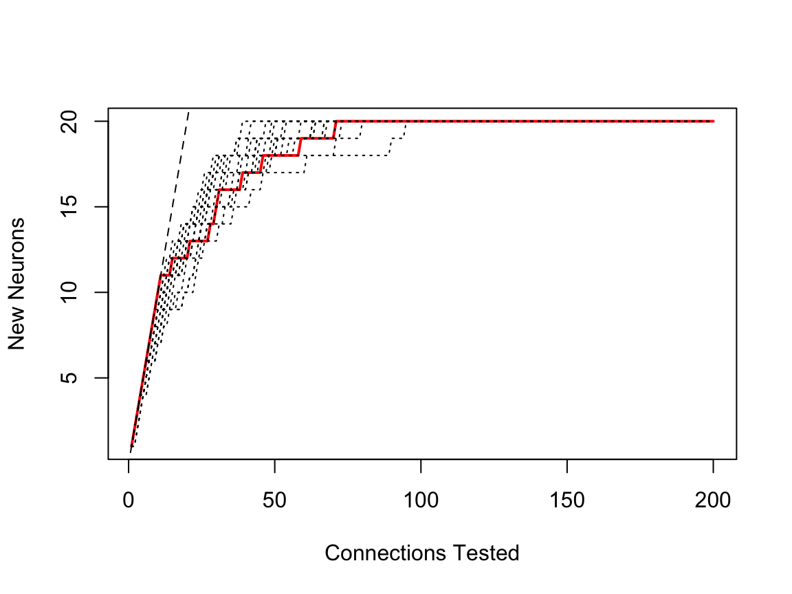
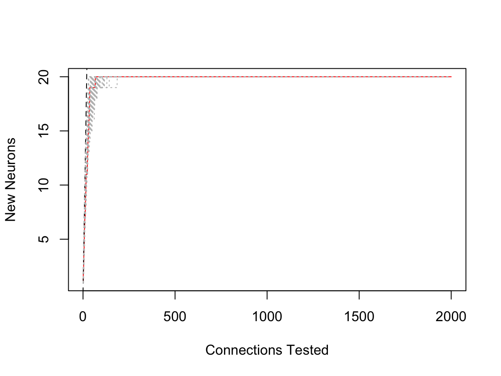
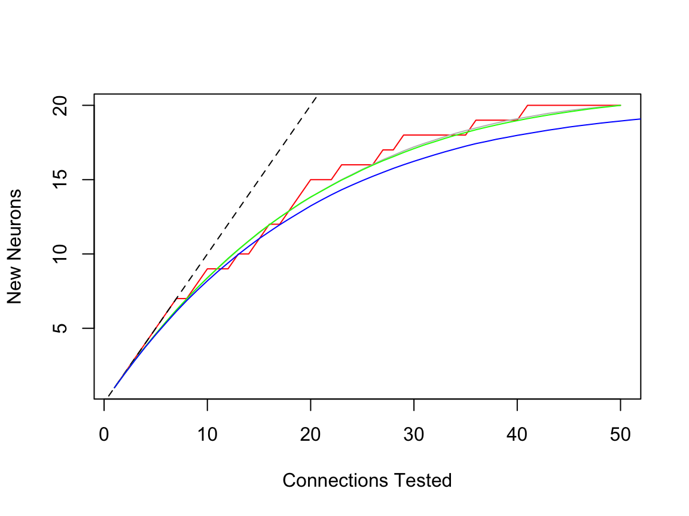

Synthetic Sampling Trials
Gregory Jefferis
2019-07-18
Source:vignettes/syntheticsamplingtrials.Rmd
syntheticsamplingtrials.RmdIntroduction
We want to think a bit about the process of sampling random partners upstream or downstream of a given neuron. In most cases in FAFB this is prohibitively expensive, so it has rarely been done. However, there are instances, particularly cases where a neuron is locally complete for some arbour. We would like to think about how much we can infer about the distribution of real connection strengths based on knowing the partners for only a random sample of those connections.
Toy examples
Let’s consider some toy examples in order to develop some intuition for and approaches to this problem.
Uniform distribution
The simplest example is a neuron that makes the same number of connections with every partner.
# scuniformp=samplingcurve(sample(1:20, size=200, replace=T))
scuniform=samplingcurve(rep(1:20,10))
head(scuniform)
#> new partner
#> 1 1 1
#> 2 2 2
#> 3 3 3
#> 4 4 4
#> 5 5 5
#> 6 6 6Let’s look at the distribution of partners. In this simplest of all cases, it’s uniform.
Now let’s look at what happens as the sampling curve evolves:

Hmm, that’s because the connections are in a non-random order. Let’s randomise. We have a function for that subsample.

OK. That looks more reasonable. A brief note about the plot. The red line plots the number of new neurons for each connection tested. There is a horizontal step each time we hit a neuron that we have already seen. The black dashed line is the equality line (y=x), i.e. what we would get if there were only one partner per neuron.
Now, assuming our random sampling is precisely that, we should see different curves for different runs.

We can also look at how the proportion of identified targets evolves:

In this instance, this is identical to the plot above, just with the axes normalised. Things could be different of course if we set some threshold on which partners (only strong ones?) we wanted to show.
Uniform - more synapses
Let’s look at what happens when we have a neuron that makes more synapses but has the same number of partners.

So we can see that in this situation we need to sample a relatively small fraction of the total number of connections in order to identify all partners. In fact the absolute amount of sampling required is very similar to the case above with 10 connections per partner.
How much do we need to sample?
Imagine we want to define a reasonable amount of sampling for the two examples above. For example we might calculate the amount of sampling required to have a 95% chance of identifying 80% of the partners.
We could do this by computing many randomised versions of the sampling curves and then thresholding appropriately.
required_sample <- function(x, required=.8, certainty=.95, replicates=1000) {
csx=function(x) cumsum(!duplicated(sample(x)))
pp=replicate(replicates, csx(x$partner))
npartners=length(unique(x$partner))
threshold=npartners*required
names(threshold) <- required
res=t(sapply(threshold, function(t) quantile(colSums(pp<t)+1, probs = certainty)))
attr(res, 'x')=required
attr(res, 'y')=certainty
res
}required_sample(scuniformr, certainty = c(0.5,0.9,0.95,.975,0.99))
#> 50% 90% 95% 97.5% 99%
#> 0.8 27 35 37 40 43.01
#> attr(,"x")
#> [1] 0.8
#> attr(,"y")
#> [1] 0.500 0.900 0.950 0.975 0.990
scuniform2k.rs <- required_sample(scuniform2k,
certainty = c(0.5,0.9,0.95,.975,0.99))
scuniform2k.rs
#> 50% 90% 95% 97.5% 99%
#> 0.8 29 38 41 44 47.01
#> attr(,"x")
#> [1] 0.8
#> attr(,"y")
#> [1] 0.500 0.900 0.950 0.975 0.990So we can read this as saying that we need to sample 41 synapses to have a 95% chance of identifying at least 80% (i.e. 16) of the partners.
required_sample is vectorised over both the required fraction of partners identified and the required certainty.
sdist = required_sample(
scuniformr,
required = seq(from = 0, to = 1, by = 0.05),
certainty = c(0.01, .025, 0.05, 0.1, 0.5, 0.9, 0.95, .975, 0.99),
replicates = 10e3
)
knitr::kable(sdist)| 1% | 2.5% | 5% | 10% | 50% | 90% | 95% | 97.5% | 99% | |
|---|---|---|---|---|---|---|---|---|---|
| 0 | 1 | 1 | 1 | 1 | 1 | 1 | 1 | 1.000 | 1 |
| 0.05 | 1 | 1 | 1 | 1 | 1 | 1 | 1 | 1.000 | 1 |
| 0.1 | 2 | 2 | 2 | 2 | 2 | 2 | 2 | 3.000 | 3 |
| 0.15 | 4 | 4 | 4 | 4 | 4 | 5 | 5 | 6.000 | 6 |
| 0.2 | 4 | 4 | 4 | 4 | 4 | 5 | 5 | 6.000 | 6 |
| 0.25 | 5 | 5 | 5 | 5 | 5 | 7 | 7 | 7.000 | 8 |
| 0.3 | 7 | 7 | 7 | 7 | 8 | 10 | 10 | 11.000 | 12 |
| 0.35 | 8 | 8 | 8 | 8 | 9 | 12 | 12 | 13.000 | 14 |
| 0.4 | 8 | 8 | 8 | 8 | 9 | 12 | 12 | 13.000 | 14 |
| 0.45 | 9 | 9 | 9 | 9 | 11 | 14 | 14 | 15.000 | 16 |
| 0.5 | 10 | 10 | 10 | 11 | 13 | 16 | 17 | 18.000 | 19 |
| 0.55 | 11 | 11 | 12 | 12 | 14 | 18 | 19 | 20.000 | 22 |
| 0.6 | 14 | 14 | 15 | 15 | 19 | 24 | 25 | 26.000 | 28 |
| 0.65 | 14 | 14 | 15 | 15 | 19 | 24 | 25 | 26.000 | 28 |
| 0.7 | 17 | 18 | 18 | 19 | 24 | 31 | 33 | 35.000 | 37 |
| 0.75 | 17 | 18 | 18 | 19 | 24 | 31 | 33 | 35.000 | 37 |
| 0.8 | 19 | 20 | 21 | 22 | 28 | 35 | 37 | 40.000 | 43 |
| 0.85 | 21 | 22 | 23 | 25 | 32 | 41 | 44 | 46.025 | 50 |
| 0.9 | 24 | 26 | 27 | 29 | 37 | 48 | 52 | 55.000 | 60 |
| 0.95 | 28 | 29 | 31 | 34 | 44 | 59 | 64 | 68.000 | 74 |
| 1 | 34 | 36 | 39 | 42 | 57 | 80 | 88 | 96.000 | 104 |
Here the columns represent the quantiles (i.e. certainty) and the rows are the fraction of connections to be found.
library(viridis)
#> Loading required package: viridisLite
filled.contour(sdist,
color.palette = viridis,
x = attr(sdist,'x'),
y = attr(sdist,'y'),
xlab='required',
ylab='certainty',
key.title = title(main='Samples')
)
We could repeat this plot normalising the number of samples
sdist = required_sample(
scuniformr,
required = seq(from = 0, to = 1, by = 0.05),
certainty = c(0.5, 0.9, 0.95, .975, 0.99),
replicates = 10e3
)
filled.contour(sdist/200,
color.palette = viridis,
x = attr(sdist,'x'),
y = attr(sdist,'y'),
xlab='required',
ylab='certainty',
key.title = title(main='Frac Sampled', cex.main = .7)
)Distribution
The statistical distribution that describes the sampling processes above is the multivariate hypergeometric distribution. The extraDistr::rmvhyper function provides an alternative way of generating random variables — however it is less efficient for our purposes of generating a complete sampling sequence from k=1:N connections rather than just a given value of k.
This distribution is classically described as sampling without replacement from an urn containing balls of different colours. In our problem, the colours represent each partner neuron. We can sample k balls of the N total, where there are m colours and each colour appears n_i times (i=1:m).
Inference
In the sections above, we defined a known distribution of partners. However, we will normally not know this when we are carrying out a sampling procedure — if we did, we would not need to worry about sampling.
The more interesting situation for us is the one in which we have partial sampling information in front of us, but we do not know the distribution of the number of balls. While we will normally know the total number of connections, we will not know the number of partners or their distribution. A complete description of the full multivariate hypergeometric parameter set will probably be beyond us, because there would be m parameters (numbers of each colour) to estimate. To see why, consider a (small) real neuron which has 200 connections, with 50% of the partners making 1 or 2 connections, but these weak partners might only contribute 10% of the connections.
It will therefore be more plausible to infer some kind of summary of the distribution of partners. This could be the number of strong partners by some definition or perhaps a histogram that divides connection strengths into coarse groups. Finally it could be hyperparameters that describe the distribution from which the multivariate hypergeometric parameters n_i are drawn. This might for example be a skewed distribution, which could be characterised by e.g. its first 3 or 4 moments. It may well be that the distribution of connection strength can be described by some relatively well known distribution like the exponential distribution, in which case 1 or 2 parameters might suffice.
Toy inference
To get a handle on the problem, we will start by considering the same uniform distribution of partners used above. So the problem resolves to defining the number of partner neurons (m).
Let’s imagine that we have in front of us a 25% sample of the first neuron that we used.
scuniform.25=subsample(scuniformr, fraction = 0.25)
plot(scuniform.25, ylim=c(0,20), lwd=3)
abline(h=20, lty=3, col='grey')
Now in this case we found 20/20 partners, but of course we might have hit a different number by chance.
We could try to identify the most likely value for m by simulating a 25% sample for many values of m and then choosing the one most likely to generate the observed sampling curve. Now we know that m must be greater than the observed number of partners.
#' Brute force maximum likelihood estimate for uniform multivariate distribution
#'
#' @param x \code{samplingcurve} object
#' @param mi Range of m (i.e. number of parter neurons) to consider. When only
#' one value is given then that is assumed to be the max to consider and the
#' minimum is taken from the observer number of classes.
#' @param N total number of connections
#' @param ... passed to \code{urmvhyper}
#'
#' @return
#' @export
#'
#' @examples
mvh_uniform_mle <- function(x, mi=NULL, N=attr(x, 'N'), ...) {
stopifnot(inherits(x,'samplingcurve'))
stopifnot(isTRUE(N>1))
observed_m=length(unique(x$partner))
max_m=N # hopefully this is massive overestimate
# would be great if we could adaptively reduce max_m when we have gone over
# the hump
if(is.null(mi))
mi=seq.int(observed_m, max_m)
else {
if(length(mi)==1)
mi <- seq.int(observed_m, mi)
# check we have a sensible range
if(mi[1]<observed_m) {
warning("minimum mi < observed_m")
}
stopifnot(mi[length(mi)]<max_m)
}
k=nrow(x)
# calculate number of observations matching observed value for each n_i
nobs=sapply(mi,
function(m) sum(rowSums(
urmvhyper(N=N, m=m, k=k, ...)>0)==observed_m)
)
names(nobs)=mi
nobs
}Now, let’s use those functions:
mvh_uniform_mle(scuniform.25, mi=24)
#> 20 21 22 23 24
#> 3087 3941 3036 1848 936
mvh_uniform_mle(subsample(scuniform2k, fraction = .05), mi=24)
#> 20 21 22 23 24
#> 8965 1297 139 11 0In general we see that our maximum likelihood estimate is m=20,21.
Using the sampling curve
The preceding section developed a maximum likelihood approach to estimating the number of partners in our toy example. This is all very well, but it actually uses almost none of the information inherent in the sampling curve. In particular it uses only the final number of partners observed rather than the distribution of randomly observed connection strengths.
We could think about the features of this distribution being encapsulated in the staircase nature of the sampling curve. Here is an example of such a curve (red line) for a 25% sample of our toy neuron’s connections; additional 25% samples are plotted in grey.
plot(scuniform.25, lwd=3)
# add lines resampling from the full partner data
lines(scuniform, rand = 20)The red line looks like it belongs within the family of grey curves. But what we can we say about the general form of these sampling curves? First of all, the order of connections selected in each sampling curve is irrelevant. Therefore any permutation of the selected connections is equally valid representation of that particular sample.
Let’s look at a plot with a re-ordering of that 25% sample. We can generalise the step function to a mean curve. The lines.samplingcurve() method can do that for us.
plot(scuniform.25)
# plot 20 random re-ordering (grey dotted lines)
lines(scuniform.25, rand=20, col='grey')
# plot the mean of 2000 reorderings
lines(scuniform.25, rand=2000, mean=TRUE, col='blue')Now it’s important to realise that permuting one set of sampled connections is not the same as drawing the same number of connections from the total number available. You can see this in the following plot, which compares two different random draws (green vs grey) vs blue the smooth plot derived from permuting all of the connections.
plot(scuniform.25)
lines(scuniform.25, rand=2000, mean=TRUE, col='grey')
# compare with another random 25% draw
scuniform.25v2=subsample(scuniformr, fraction=0.25)
lines(scuniform.25v2, rand=2000, mean=TRUE, col='green')
lines(scuniformr, rand=2000, mean=TRUE, col='blue')
Histogram representation
Given the fact that in a random sampling paradigm, the sampling order should not have any meaning, it seems reasonable to think that all the information inherent in the sample is actually contained only in the number of hits for each partner. In a real life situation, it would probably make sense to check that the observed sample is consistent with a random sample (I think you could compare with permuted versions and see whether it falls within a reasonable envelope).
There is a method hist.samplingcurve() that produces a nice order plot of the connection numbers. Naturally if you try this on a random sample, it will not be uniform. For example:
In fact, since for these purposes we do not distinguish between different individual partners, the distribution of connection strengths is a useful summary, and equally informative.
plot(table(table(scuniform.25$partner)), ylab='Number of Partner Neurons',
xlab='No of Connections')
Partner strength distribution
So can we use these data to carry out the same kind of maximum likelihood fit? And can we ask if they are consistent with a uniform distribution?
The second question feels a little easier. We could characterise the deviation of the distribution from some mean/expected value and compare the statistic with a null distribution derived from the proposed distribution. Ah, but we do actually need to know the number of partner neurons to calculate the expected distribution!
Let’s make a start by computing an expected distribution for a given number of partners for a given sampling fraction
e_partner_strength_urmvhyper <- function(m, nbins=m, ..., normalise=TRUE) {
# nb nbins will be an overestimate ...
rr=apply(urmvhyper(m=m, ...), 1, tabulate, nbins)
if(normalise)
rr = scale(rr, center = F, scale = colSums(rr))
rowMeans(rr)
}
# what we would expect for a 25% sample
expected_25=e_partner_strength_urmvhyper(m=20, N=200, k=50)
tt=tabulate(table(scuniform.25$partner), nbins = 20)
tt_norm=tt/sum(tt)
plot(expected_25, type='l', ylim=c(0,max(tt_norm)), col='red', lwd=2)
lines(tt_norm)
I assume that there’s an analytic solution for the expected distribution, but don’t know what it is. One can then compare with that observed sample. Presumably you could use a chi2 goodness of fit or a perhaps the KL divergence to measure the difference.
TODO — implement EM method for this.
Mixture model
All of the discussion so far has used a uniform distribution for n_i, the number of balls of each colour. However we know that this is not the case for real neurons — they have partners with variable numbers of neurons. Let’s take a look at a real distribution to motivate this.
This is an example of a complete upstream data set of the dendrites of a lateral horn neuron
Note that the sampling curve shows a strong bias in focussing on the same partners early on (the sampling was not randomised), which you can see by the fact that the red line falls significantly below the grey mean line.
We can also summarise this as the number of partners with a given number of connections
This clearly emphasises the large number of weak inputs, while also indicating a long tail of strong inputs. One might suspect that many of these weak inputs do not have an impact on the firing of the neuron; however if they are synchronous e.g. because they are from cells of the same type, carrying the same information, then such weak inputs would be more likely to have an impact. This means that deciding on a threshold connection strength for “interesting” partner neurons may be difficult. In published work the best approach for estimating such interesting partners in the absence of experimental data is to use bilateral symmetry.
It might be interesting to consider a family of distributions that could be parameterised to show different amounts of skew.